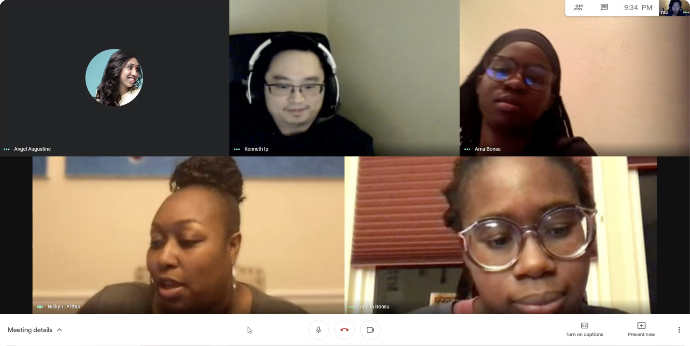
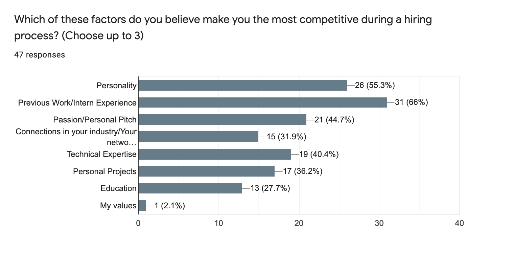
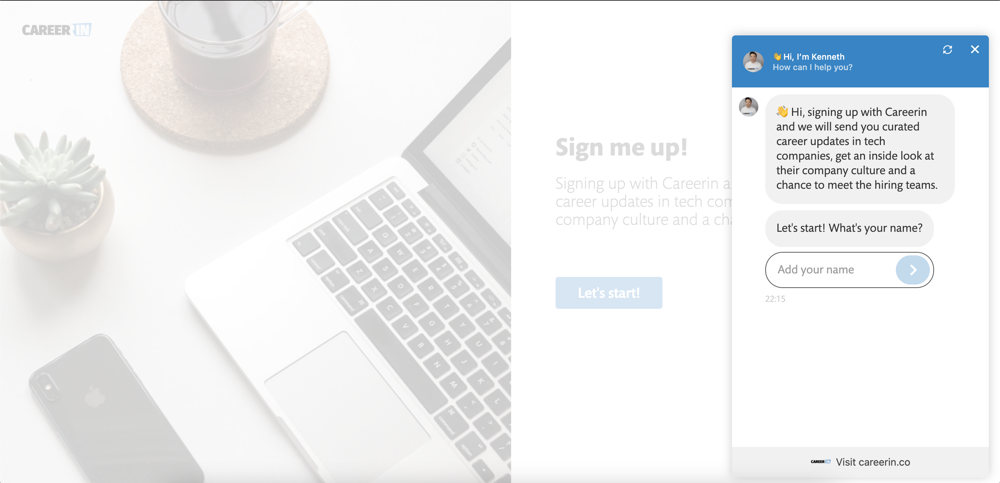
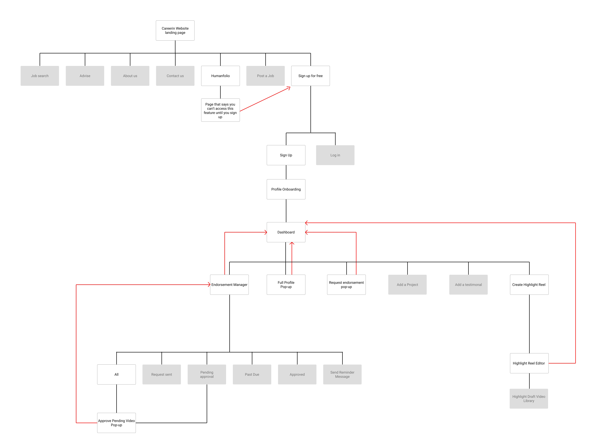

RESEARCH
Careerin's founder, Kenneth Ip, has done tech recruitment for over 10 years and he developed this platform to help job seekers
in tech expedite their search for work opportunities. He claimed that recruiters can't "see" a candidate's personality and
believes personality is the main reason why many tech professionals struggle to find work, even with a polished resume.
His vision for Careerin is for users to create their own profiles that show who they are outside of their professions and allow 1:1 engagement with recruiters.

Interview with Kenneth Ip.
Research Findings
We conducted four interviews and a Google survey to reach a wider audience. Feedback from our responders revealed 55.3% saw value in showing personality, but felt it can't make up for their lack of work experience.
After we presented our findings to Kenneth, we worked with him to re-design the current sign-up process on the Careerin website.
When users sign up, they are brought to a messaging page that prompts them to connect with Kenneth.

We developed a sitemap with the new product idea for Careerin.